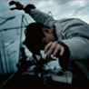

背影
2017-5-23
14:55
阅读：56123
名字名字

伟大的渺小
林俊杰
不明飞行物（体）即未确认飞行物（体）（Unidentified flying object，缩写：UFO），是指不明来历、不明性质，漂浮及飞行在天空的物体，台湾称为幽浮。
UFO现象大体分为四类：已知自然现象的误认，未知自然现象，未知自然生物，第四类是指有明显智能飞行能力、空军所制造的没公开的有高性能的飞行器，即一些空军没公开的实验性的圆盘飞行器（Circular Disc Aerocraft）——可见，不明飞行物与外星飞行物不能划等号。

飞碟：指来自其他星球的太空船，而UFO的范围广泛得多。20世纪40年代开始，美国上空发现会发光的圆盘飞行器，当时的报纸把它称为“椭圆形的发光体”，这是当代对不明飞行物的兴趣的开端，后来人们着眼于世界各地的不明飞行物报告，但至今尚未发现能让科学界普遍接受的说明它们来自地外文明的证据。UFO一词源于美国空军的“蓝皮书计划”，该计划的第一任负责人是爱德华·鲁佩尔特上尉，他正式发明“UFO”一词（直译为不明飞行物），取代了当时所用不准确而且有暗示性的“飞碟”一词。